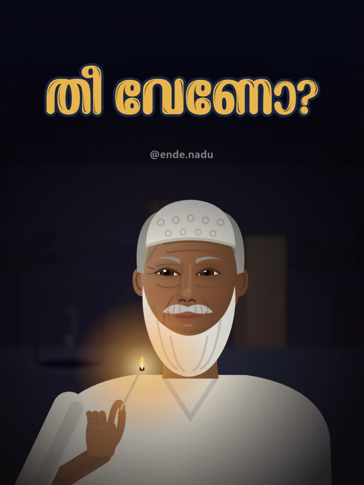

1:30പുതിയ കഥ
തീ വേണോ?
പത്താം വയസ്സിൽ ഞങ്ങൾ ഏഴു കസിൻസും തറവാടിന്റെ പിന്നാമ്പുറത്തിരുന്ന് പത്രം ചുരുട്ടി ബീഡി വലിച്ചു. ഒരു രാത്രി വല്ല്യുപ്പ പിടിച്ചു. പക്ഷേ ഞങ്ങളെ ഒറ്റിയത് ആരായിരുന്നു?
Seven cousins smoked newspaper beedis behind the old house, until a voice in the dark asked, "Need a light?" Fourteen years later, Grandma told us who gave us away.